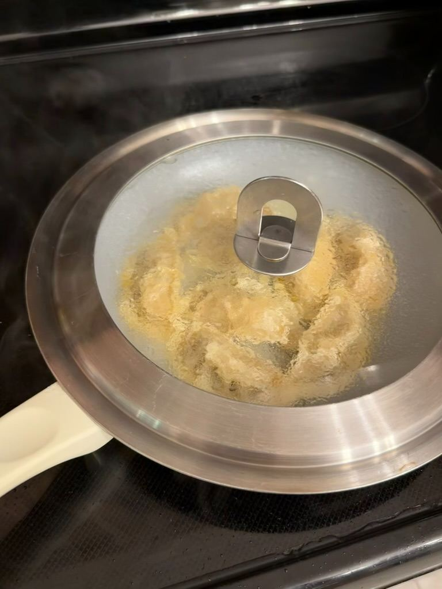
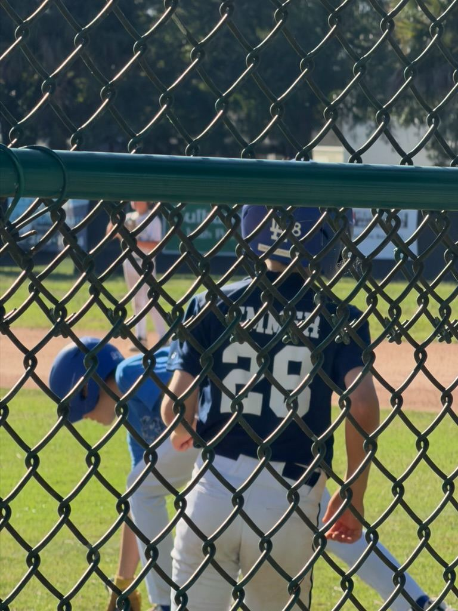
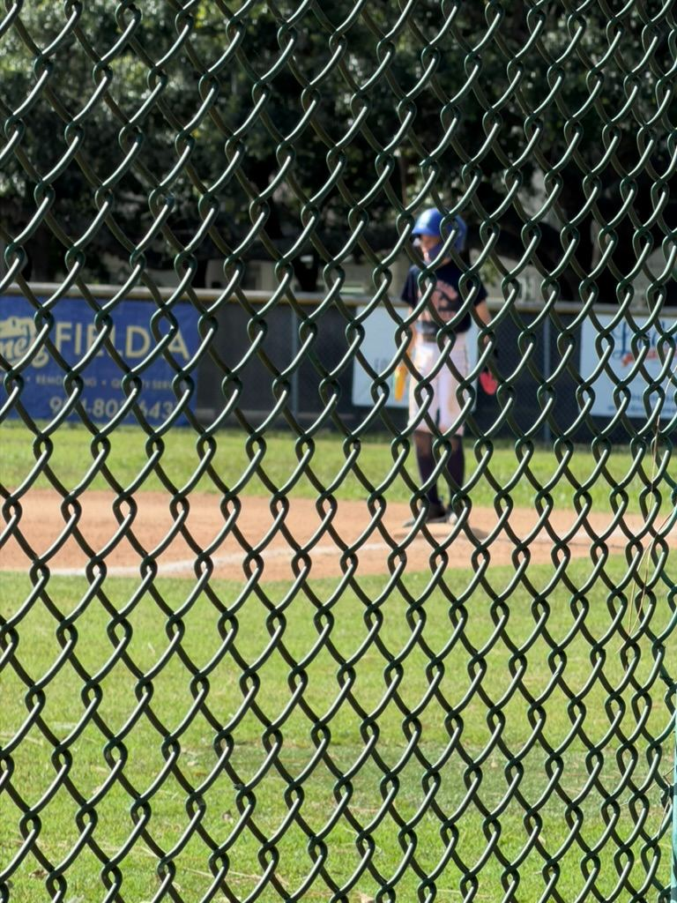

Decluttering, Diamond Dirt, and Dinner: The PCS Countdown Continues





The countdown to Japan is officially in double digits, and our days are flying by in a blur of packing tape, baseball dirt, and savory kitchen experiments. Life right now is a delicate balancing act between emptying out our current life and squeezing every last drop of fun out of our remaining time here.
Here’s a look at what went down today on our Emmerican Adventure.
The Great Purge: Round 4,500
If you want to know what a looming international PCS looks like, it looks like a mountain of donation bags in the living room and an ongoing internal debate over whether we really need to bring a lifetime supply of random charging cables across the Pacific. Hint: We don't.
Today was all about the continued purge. We tackled more closets, sorted through drawers, and made yet another run to the local donation center. There is something incredibly liberating about lightening the load, even if the house looks a bit like a construction zone while it's happening. Every bag out the door feels like a step closer to Tokyo.
All-Star Season is officially Here ⚾
Just because we’re planning a massive move doesn’t mean the sports calendar slows down! The kids are deep into the hustle, and today was all about intense scrimmages to get locked in for the upcoming Little League All-Star tournament.
There’s nothing quite like the energy of summer ball. The weather is heating up, the dugouts are loud, and the competition is fierce. Watching the kids dig in, make plays, and shake off the rust with their teammates is the perfect reminder of why we love this community so much. Win or lose, these scrimmage games are exactly what they need to get mentally and physically ready for the big tournament ahead.
Fueling Up: Pot Stickers & Japchae 🥢
After a long day of hauling donation boxes and chasing baseballs under the Florida sun, nobody had the energy for a massive, complicated cleanup—but we still wanted a killer meal.
Tonight’s menu was a perfect, comforting mashup: crispy pan-fried pot stickers paired with homemade Japchae (Korean glass noodles loaded with stir-fried veggies).
Pro-Tip: Getting that perfect crisp-yet-tender texture on the pot stickers is a science, but when you nail it, there's nothing better.
It was the ultimate reward after a high-energy day. Plus, it’s a little sneak peek for our palates as we gear up for all the incredible food adventures waiting for us in Asia later this summer.
What’s Next?
Tomorrow brings more packing tape, more field time, and hopefully a few more empty shelves. We're taking it one day at a time, making memories, and keeping the adventure alive.
Thanks for following along on our journey! Drop your best moving tips or your favorite quick weeknight dinner recipes in the comments below.
Until next time,
The Emmers